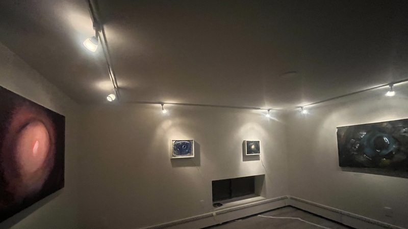

log


from settle, a multimedia installation created in collaboration with Alexandra Wood at Philadelphia Small Works Gallery, opening February 8th at 6pm
from things you might hear by Kelly Clare & Nora Claire Miller

you are cordially invited to join Alexandra Wood and me at Philadelphia Small Works Gallery for what is sure to be a memorable event on February 8th, 2025

from When We Look at Things We Steal their Color and Grow Heavy Under their Weight by Mike Bagwell
last night, I took out the trash while listening to "What's Up" by 4 Non Blondes. Today, I woke up with "No Below" by Speedy Ortiz stuck in my head.

today, I'm thinking about my old friend Ted Lowitz and these words he wrote on a piece of paper I found in his space in Chicago. I feel very grateful for Ted and for the words.

Warren Longmire and I will be hosting another flat imagination workshop next month, this time at The Perch Music & Arts Workshop at The Emerald Wildflower Garden, a venue I fell in love with after playing a show there with Sadie Dupuis, Chris Campanioni, olga mikolaivna, John Pinto, Ollie Becker, Edward Longo, Orah Ruth, and Mike Bagwell to kick off Mike's new Ghost Harmonics performance series.
This installment of the flat imagination workshop will include performances by dani derks and The Goodbye Mind as well as a beginner-friendly digital synthesis workshop using VCV Rack, led by dani. The idea is "here's a cool thing I made; here's how I made it and how you can make it too." So if you're in Philadelphia or nearby, please join us to see what cool things dani has made and then to see how they made them and how we can make them too!
[ former]
[further]
[final]
[first]
williamthazard [at] pm.me